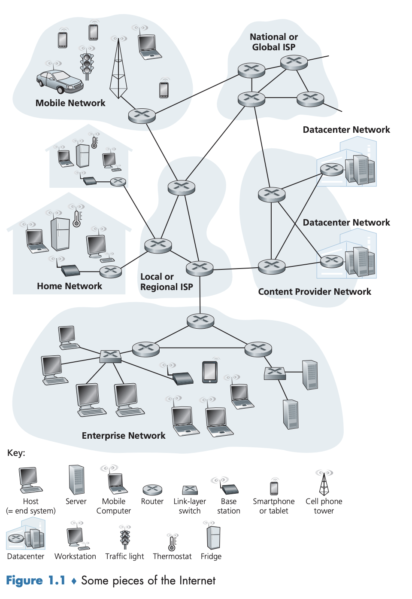
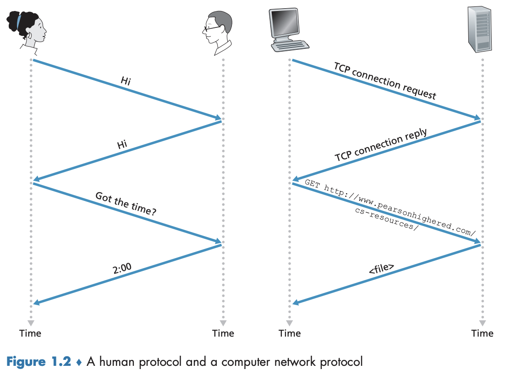

1.1 인터넷이란 무엇인가?
위 질문에 답하기 위한 답하기 위한 두 가지 방법이 존재한다.
- 인터넷을 구성하는 기본적인 하드웨어와 소프트웨어 구성요소(너트와 볼트) 를 기술
- 분산 애플리케이션에 서비스를 제공하는 네트워킹 인프라스트럭처 관점 에서의 인터넷을 기술
1.1.1 구성요소로 본 인터넷
그림 1.1은 인터넷의 구성요소를 나타낸 것이다. 
인터넷(Internet)
- 전 세계적으로 수십억 개의 컴퓨팅 장치를 연결하는
컴퓨터 네트워크 - 주로 전통적인 데스크톱 PC, 리눅스 워크스테이션, 소위 말하는 서버들에서 스마트폰, 태블릿으로, 그리고 더 나아가 TV, 게임 콘솔, 자동온도조절기 등과 같은 비전통적인 인터넷 ’사물들’이 인터넷에 연결되고 있다.
호스트(Host), 종단 시스템(End system)
- 컴퓨터 네트워크에 연결되는 전통적, 비전통적 장치를 통들어 이루는 말
- 통신 링크(communication link) 와 패킷 스위치(packet switch) 의 네트워크로 연결된다.
통신 링크(Communication link)
- 동축케이블, 구리선, 광케이블, 라디오 스펙트럼을 포함한 다양한 물리 매체(physical media)로 구성된다.
- 이때 각각의 링크들은 다양한 전송률(transmission rate, 링크 대역폭)을 이용하여 데이터를 전송한다.
- 전송률은 초당 비트 수를 의미하는 bps(bit per second) 단위를 사용한다.
패킷(Packet)
- 송신 종단 시스템이 전송할 데이터를 세그먼트(segment)로 나누고 각 세그먼트에 헤더(header)를 붙여 만든 정보 패키지
- 목적지 종단 시스템으로 네트워크를 통해 보내지면 그곳에서 원래의 데이터로 다시 조립된다.
패킷 교환기, 패킷 스위치(Packet switch)
- 입력 통신 링크의 하나
- 도착하는 패킷을 받아서 출력 통신 링크의 하나로 그 패킷을 전달한다.
- 두 형태의 스위치로 나눌 수 있으며 모두 최종 목적지 방향으로 패킷을 전달한다.
- 라우터(router): 네트워크 코어에서 사용됨.
- 링크 계층 스위치(link-layer switch): 보통 접속 네트워크에서 사용됨.
경로(Route, Path)
- 패킷이 송신 종단 시스템에서 수신 종단 시스템에 도달하는 동안 거쳐온 일련의 통신 링크와 패킷 스위치
- (패킷을 전송하는) 패킷 교환 네트워크는 여러 가지 면에서 (차량을 전송하는) 고속도로, 도로, 교차로 등의 수송 네트워크와 동일하다.
- 패킷은 컴퓨터 네트워크를 통한 경로를 따른다.
ISP(Internet Service Provider)
- 패킷 스위치와 통신 링크로 이루어진 네트워크
- 종단 시스템의 종류는 여러가지가 있다. (가정 ISP, 법인과 대학 ISP 등)
- 종단 시스템에게 다양한 네트워크 접속을 제공한다. (가정용 초고속 접속, 고속 LAN 접속, 이동 무선 접속 등)
- CP(content provider)에게 인터넷 접속을 제공한다. → 웹사이트와 비디오 서버를 인터넷에 직접 연결할 수 있게 된다.
- ISP들의 연결 구조
- 인터넷은 종단 시스템을 서로 연결하는 것이므로 종단 시스템에 접속을 제공하는 ISP들도 서로 연결되어야만 한다.
- 하위 계층 ISP는 국가 그리고 국제 상위 계층 ISP를 통해 서로 연결한다.
- 상위 계층 ISP들은 서로 직접 연결된다.
- 상위 계층 ISP는 광 링크로 연결된 고속 라우터로 구성된다.
- 상위 계층, 하위 계층이든 각 ISP 네트워크는 따로 관리되며 IP 프로토콜을 수행하며, 네이밍(naming)과 주소배정 방식을 따른다.
프로토콜(protocol)
- 인터넷에서 정보 송수신을 제어한다.
- 인터넷에서 가장 중요한 프로토콜을 통칭하여 TCP/IP라고 한다.
- TCP(Transmission Control Protocol)
- IP(Internet Protocol): 라우터와 종단 시스템 사이에서 송수신되는 패킷 포맷을 기술한다.
인터넷 표준(Internet Standards)
- 각각의 프로토콜 또는 모든 프로토콜이 무엇을 수행하는지에 대해 합의하는 것은 매우 중요하며, 그렇게 함으로써 상호 호환되는 시스템과 제품을 만들 수 있다.
- IETF(Internet Engineering Task Force)
- 인터넷 표준을 개발하는 기구
- RFC(requests for comment): IETF 표준 문서
- TCP, IP, HTTP, SMTP 같은 프로토콜을 정의
- IEEE 802 LAN 표준위원회
- 이더넷과 무선 와이파이(WiFi) 표준을 기술
1.1.2 서비스 측면에서 본 인터넷
- 인터넷은
애플리케이션에 서비스를 제공하는 인프라스트럭처로써 기술할 수 있다. - 전자메일, 웹 서핑 뿐만 아니라 인터넷 메시징, 실시간 도로 교통 정보를 활용한 지도 서비스 등과 같은 애플리케이션도 포함한다. 이는 서로 데이터를 교환하는 많은 종단 시스템을 포함하고 있기 때문에 분산 애플리케이션(distributed application) 이라고 부른다.
- 인터넷 애플리케이션은 종단 시스템에서 수행되며, 네트워크 코어에 있는 패킷 교환기에서 수행되지 않는다.
- 패킷 교환기는 종단 시스템 간의 데이터 교환을 쉽게 해주지만 이들은 데이터의 시작과 끝인 애플리케이션에는 관심을 갖지 않는다.
소켓 인터페이스(socket interface)
❓한 종단 시스템에서 수행되는 애플리케이션이 다른 종단 시스템에서 수행되고 있는 프로그램으로 데이터를 보내도록 인터넷에 어떻게 지시할 것인가?
- 한 종단 시스템에서 수행되는 프로그램이 어떻게 인터넷 인프라스트럭처에 다른 종단 시스템에서 수행되는 특정 목적지 프로그램으로 데이터를 전달하도록 요구하는지 명시한 것
- 송신 프로그램이 따라야 하는 규칙의 집합이며 인터넷은 이 규칙에 따라 데이터를 목적지 프로그램으로 전달하게 된다.
1.1.3 프로토콜이란 무엇인가?
그림 1.2는 전형적인 의사소통 과정을 나타낸다. 
명확하게 송수신된 메시지와 이러한 메시지가 송수신될 때나 다른 상황이 발생하였을 때 취하는 행동등이 사람 프로토콜의 중심 역할을 한다.- 사람이 다른 프로토콜을 수행한다면 그 프로토콜은 상호작용할 수 없으며 원하는 작업을 수행할 수 없다.
- 네트워킹도 이와 마찬가지이며, 어떤 일을 수행하려면 둘 이상의 통신 개체(entity)가 함께 인식하는 프로토콜이 필요하다.
네트워크 프로토콜
- 통신하는 둘 이상의 원격 개체가 포함된 인터넷에서의 모든 활동은 프로토콜이 제어한다.
- 혼잡 제어(congestion-control) 프로토콜: 종단 시스템에 존재하며, 송수신자 간에 전송되는 패킷 전송률을 조절한다.
- 라우터에서 프로토콜: 출발지(source, 소스)에서 목적지(destination)까지 패킷 경로로 설정한다.
💡 프로토콜은 둘 이상의 통신 개체 간에 교환되는 메시지 포맷과 순서뿐만 아니라, 메시지의 송수신과 다른 이벤트에 따른 행동들을 정의한다.